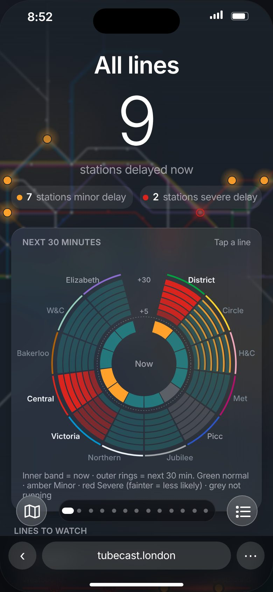
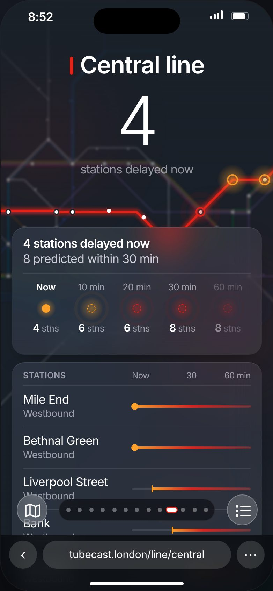
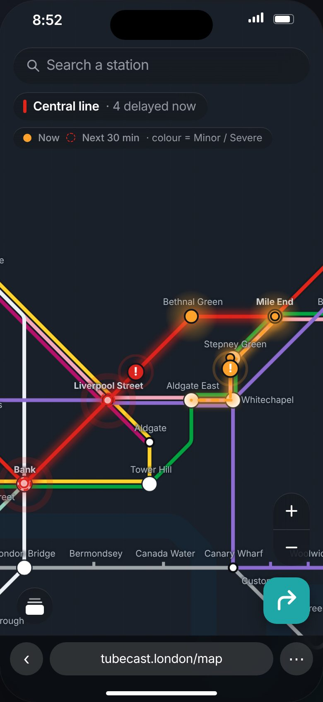
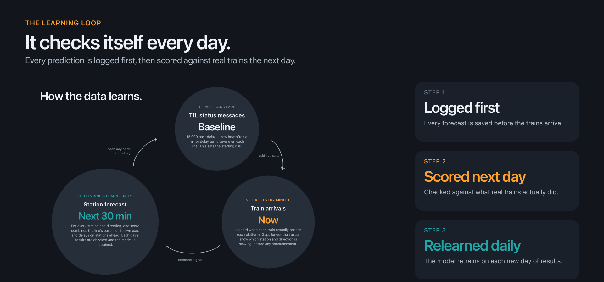

<title>Tubecast</title>
<meta name="claude:viewport-fit-sides" content="cover">
<style>
/* Layout: one long dark page that follows the pitching deck (big white headline, rounded panels, teal = forecast, amber = now). Outcomes first, screens as proof. */
:root{
  --bg:#12161C; --panel:#1A1F27; --panel-2:#222A34; --line:rgba(255,255,255,.08);
  --ink:#EEF2F6; --dim:#9AA4B1; --faint:#6E7885;
  --teal:#1FA6A6; --amber:#FFA12B; --red:#DC241F;
  --sf:-apple-system,BlinkMacSystemFont,"SF Pro Display","SF Pro Text",Inter,"Helvetica Neue",Arial,sans-serif;
  color-scheme:dark;
}
*{box-sizing:border-box}
html{scroll-behavior:smooth}
body{background:var(--bg);color:var(--ink);font-family:var(--sf);font-size:17px;line-height:1.55;letter-spacing:-.01em;
  padding-left:max(20px,env(safe-area-inset-left,0px));padding-right:max(20px,env(safe-area-inset-right,0px));padding-block:0 72px;margin:0;-webkit-font-smoothing:antialiased}
.wrap{max-width:1120px;margin:0 auto}
a{color:inherit}
:focus-visible{outline:2px solid var(--teal);outline-offset:3px;border-radius:8px}

/* top bar */
header.bar{position:sticky;top:env(safe-area-inset-top,0px);z-index:5;margin:0 calc(-1*max(20px,env(safe-area-inset-left,0px)));padding:14px max(20px,env(safe-area-inset-left,0px));
  background:rgba(18,22,28,.82);-webkit-backdrop-filter:blur(16px);backdrop-filter:blur(16px);border-bottom:1px solid var(--line)}
body::before{content:"";position:fixed;inset:0 0 auto;height:env(safe-area-inset-top,0px);background:var(--bg);z-index:10}
.bar .wrap{display:flex;align-items:center;justify-content:space-between;gap:16px}
.brand{font-weight:700;letter-spacing:.28em;font-size:14px;text-decoration:none}
nav{display:flex;gap:22px;font-size:14px;color:var(--dim)}
nav a{text-decoration:none}nav a:hover{color:var(--ink)}
@media(max-width:640px){nav{display:none}}

/* hero */
.hero{padding-block:88px 56px}
.eyebrow{font-size:12px;letter-spacing:.14em;text-transform:uppercase;color:var(--dim);font-weight:600}
.eyebrow.t{color:var(--teal)}.eyebrow.a{color:var(--amber)}
h1{font-size:clamp(44px,8vw,96px);line-height:1.02;letter-spacing:-.035em;font-weight:700;margin:18px 0 22px;text-wrap:balance;max-width:14ch}
.lede{font-size:clamp(19px,2.3vw,24px);color:var(--dim);max-width:34ch;line-height:1.4;margin:0}
.lede b{color:var(--ink);font-weight:600}
.meta{display:flex;flex-wrap:wrap;gap:10px 28px;margin-top:36px;font-size:14px;color:var(--dim)}
.meta span b{display:block;color:var(--ink);font-weight:600;font-size:15px}
.cta{display:flex;flex-wrap:wrap;gap:12px;margin-top:36px}
.btn{display:inline-flex;align-items:center;min-height:46px;padding:0 22px;border-radius:999px;font-weight:600;font-size:15px;text-decoration:none;transition:transform .2s,background .2s}
.btn:active{transform:scale(.97)}
.btn.p{background:var(--teal);color:#06181A}.btn.p:hover{background:#26bcbc}
.btn.g{background:var(--panel);color:var(--ink);border:1px solid var(--line)}.btn.g:hover{background:var(--panel-2)}

/* outcomes strip */
.stats{display:grid;grid-template-columns:repeat(4,1fr);gap:14px;margin-top:8px}
.stat{background:var(--panel);border-radius:20px;padding:24px 22px;min-width:0}
.stat .n{font-size:clamp(34px,4.4vw,52px);font-weight:700;letter-spacing:-.03em;line-height:1;font-variant-numeric:tabular-nums}
.stat .n.sm{font-size:clamp(26px,3vw,38px);padding-block:.2em}
.stat .n small{font-size:.45em;font-weight:600;color:var(--dim);letter-spacing:0;margin-left:2px}
.stat p{margin:10px 0 0;font-size:14px;color:var(--dim);line-height:1.4}
.stat.t .n{color:var(--teal)}.stat.a .n{color:var(--amber)}
@media(max-width:860px){.stats{grid-template-columns:repeat(2,1fr)}}
@media(max-width:420px){.stats{grid-template-columns:1fr}}

/* sections */
section.s{padding-block:96px 0}
h2{font-size:clamp(32px,5vw,56px);line-height:1.06;letter-spacing:-.03em;font-weight:700;margin:14px 0 16px;text-wrap:balance;max-width:18ch}
.sub{font-size:19px;color:var(--dim);max-width:44ch;margin:0;line-height:1.45}
.pts{list-style:none;padding:0;margin:28px 0 0;display:grid;gap:14px;max-width:46ch}
.pts li{display:grid;grid-template-columns:10px 1fr;gap:14px;font-size:17px;line-height:1.45}
.pts li::before{content:"";width:8px;height:8px;border-radius:50%;background:var(--faint);margin-top:.55em}
.pts li b{color:var(--ink);font-weight:600}
#app .pts li b{display:block;font-size:19px;font-weight:500}
.pts li span{color:var(--dim)}

/* product */
.split{display:grid;grid-template-columns:minmax(0,1fr) minmax(0,1fr);gap:56px;align-items:center}
@media(max-width:860px){.split{grid-template-columns:1fr;gap:36px}}
.phones{display:flex;justify-content:center;padding:36px 0;background:radial-gradient(60% 60% at 50% 40%,rgba(31,166,166,.14),transparent 70%),var(--panel);border-radius:28px}
.phone{width:min(260px,64vw);aspect-ratio:390/844;border-radius:38px;padding:7px;background:#05070A;box-shadow:0 0 0 1px rgba(255,255,255,.14),0 30px 60px -20px rgba(0,0,0,.7)}
.phone img{display:block;width:100%;height:100%;object-fit:cover;border-radius:32px}


/* app: three phones */
.split.app{grid-template-columns:minmax(0,.9fr) minmax(0,1.3fr);gap:40px}
.phones.tri{gap:18px;padding:36px 20px 28px;align-items:flex-start}
.tri figure{margin:0;flex:1;min-width:0;display:grid;justify-items:center;gap:14px}
.tri .phone{width:100%;max-width:230px}
.tri figcaption{font-size:15px;color:var(--faint)}
@media(max-width:860px){.split.app{grid-template-columns:1fr}.phones.tri{overflow-x:auto;scroll-snap-type:x mandatory;justify-content:flex-start}.tri figure{flex:0 0 62%;scroll-snap-align:center}}

/* legend chips for real vs predicted */
.key{display:flex;flex-wrap:wrap;gap:10px;margin-top:26px}
.chip{display:inline-flex;align-items:center;gap:10px;padding:9px 16px;border-radius:999px;background:var(--panel);font-size:14px;color:var(--dim)}
.dot{width:12px;height:12px;border-radius:50%}
.dot.now{background:var(--amber);box-shadow:0 0 0 4px rgba(255,161,43,.2)}
.dot.next{border:2px dashed var(--amber);animation:pulse 2.4s ease-in-out infinite}
@keyframes pulse{50%{transform:scale(1.25);opacity:.6}}
@media(prefers-reduced-motion:reduce){.dot.next{animation:none}html{scroll-behavior:auto}}

/* console */
.frame{margin-top:44px;border-radius:18px;overflow:hidden;background:var(--panel);box-shadow:0 0 0 1px var(--line),0 40px 80px -30px rgba(0,0,0,.8)}
.frame .top{display:flex;gap:7px;padding:12px 16px;background:#0E1217;border-bottom:1px solid var(--line)}
.frame .top i{width:10px;height:10px;border-radius:50%;background:#2A323D}
.frame img{display:block;width:100%;height:auto}
.frame.algo{background:#12161C}.frame.algo iframe{display:block;width:100%;aspect-ratio:16/9;border:0}
.duo{display:grid;grid-template-columns:minmax(0,1.15fr) minmax(0,1fr);gap:18px;margin-top:18px;align-items:stretch}
@media(max-width:860px){.duo{grid-template-columns:1fr}}
.card{background:var(--panel);border-radius:24px;padding:26px 26px 28px;min-width:0}
.card h3{font-size:22px;letter-spacing:-.02em;margin:10px 0 8px;font-weight:650}
.card p{margin:0;color:var(--dim);font-size:16px;line-height:1.5}
.card img{display:block;width:100%;height:auto;border-radius:12px;margin-top:20px;box-shadow:0 0 0 1px var(--line)}

/* loop video */
.video{margin-top:44px;border-radius:24px;overflow:hidden;background:#0E1217;box-shadow:0 0 0 1px var(--line)}
.video video{display:block;width:100%;height:auto;aspect-ratio:16/9}
.cap{display:flex;flex-wrap:wrap;justify-content:space-between;gap:10px 24px;margin-top:14px;font-size:14px;color:var(--dim)}
.cap a{color:var(--teal);text-decoration:none;font-weight:600}.cap a:hover{text-decoration:underline}
.loopsteps{display:grid;grid-template-columns:repeat(3,1fr);gap:14px;margin-top:24px}
@media(max-width:760px){.loopsteps{grid-template-columns:1fr}}
.loopsteps .card{padding:22px}
.loopsteps .eyebrow{display:block}
.loopsteps strong{display:block;font-size:30px;letter-spacing:-.03em;margin:8px 0 6px;font-weight:700}
.loopsteps p{font-size:15px}

/* ai teams + lessons */
.two{display:grid;grid-template-columns:1fr 1fr;gap:18px;margin-top:40px}
@media(max-width:760px){.two{grid-template-columns:1fr}}
.two h3{font-size:24px;letter-spacing:-.02em;margin:0 0 6px;font-weight:650}
.two .sub2{color:var(--dim);margin:0 0 20px;font-size:16px}
.two ul{list-style:none;padding:0;margin:0;display:grid;gap:12px}
.two li{display:grid;grid-template-columns:10px 1fr;gap:12px;font-size:16px;line-height:1.45;color:var(--ink)}
.two li::before{content:"";width:7px;height:7px;border-radius:50%;background:var(--faint);margin-top:.6em}
.card.hl-a h3{color:var(--amber)}.card.hl-t h3{color:var(--teal)}

footer{margin-top:110px;padding-top:28px;border-top:1px solid var(--line);display:flex;flex-wrap:wrap;justify-content:space-between;gap:14px;color:var(--dim);font-size:14px}
footer b{color:var(--ink);letter-spacing:.28em;font-size:13px}
</style>

<header class="bar"><div class="wrap">
  <a class="brand" href="#top">TUBECAST</a>
  <nav aria-label="Sections"><a href="#outcomes">Outcomes</a><a href="#app">App</a><a href="#method">Algorithm</a><a href="#loop">Learning loop</a></nav>
</div></header>

<main class="wrap" id="top">

<section class="hero">
  <div class="eyebrow t">London Underground · delay forecast</div>
  <h1>A delay forecast for the Tube.</h1>
  <p class="lede">See which <b>station and direction</b> is slowing now, and where it may slow in the <b>next 30 minutes</b>, before any announcement.</p>
  <div class="cta">
    <a class="btn p" href="app/index.html" target="_blank" rel="noopener">Open the live app</a>
    <a class="btn g" href="app/console.html" target="_blank" rel="noopener">See the console</a>
  </div>
  <div class="meta">
    <span>Role<b>Product design + build</b></span>
    <span>Made for<b>Palantir Show &amp; Tell</b></span>
    <span>Surfaces<b>Mobile app · Desktop console</b></span>
    <span>Year<b>2026</b></span>
  </div>
</section>

<section id="outcomes" aria-label="Outcomes">
  <div class="stats">
    <div class="stat t"><div class="n">773</div><p>station-and-direction points tracked across 12 lines</p></div>
    <div class="stat a"><div class="n">60<small>sec</small></div><p>refresh from real train arrivals, not announcements</p></div>
    <div class="stat t"><div class="n sm">10·20·30<small>min</small></div><p>look-ahead for every point, in one glance</p></div>
    <div class="stat"><div class="n">Daily</div><p>each forecast is logged, scored on real trains, then relearned</p></div>
  </div>
  <div class="card" style="margin-top:14px;display:grid;gap:6px">
    <div class="eyebrow">Checked on days the model had not seen</div>
    <p style="color:var(--ink);font-size:19px;line-height:1.45;max-width:60ch">It finds more of the delays that actually start than the baseline at all three horizons. Top-5% hit rate: <b style="color:var(--teal)">10.3% · 17.4% · 24.5%</b> at 10 · 20 · 30 min, against <b>9.0% · 15.6% · 22.6%</b> for the usual-pattern baseline.</p>
    <p style="font-size:14px;color:var(--faint)">Four held-out days, about ten days of training data. An early signal that gets stronger as data grows.</p>
  </div>
</section>

<section class="s" id="app">
  <div class="split app">
    <div>
      <div class="eyebrow a">The app · phone</div>
      <h2>Know before you tap in.</h2>
      <p class="sub">One ring for the whole network, one swipe per line. Real delays and forecast delays never look alike.</p>
      <ul class="pts">
        <li><div><b>12 lines in one swipe.</b> <span>The overview is the first page, each line follows, and the map is one tap away.</span></div></li>
        <li><div><b>Station by station.</b> <span>Pick a station, see the direction that is slowing and when it may clear.</span></div></li>
        <li><div><b>Plan around it.</b> <span>Route options show the extra minutes when a trip crosses a delay.</span></div></li>
      </ul>
      <div class="key" aria-label="Legend">
        <span class="chip"><i class="dot now"></i>Now: filled</span>
        <span class="chip"><i class="dot next"></i>Next 30 min: dashed, pulsing</span>
      </div>
    </div>
    <div class="phones tri">
      <figure><div class="phone"></div><figcaption>All lines</figcaption></figure>
      <figure><div class="phone"></div><figcaption>Line · Central</figcaption></figure>
      <figure><div class="phone"></div><figcaption>Map</figcaption></figure>
    </div>
  </div>
</section>

<section class="s" id="method">
  <div class="eyebrow t">The algorithm</div>
  <h2>How the forecast learns.</h2>
  <p class="sub">One station and direction, step by step: gaps between real trains, the signals that raise the risk, and a score that is relearned from previous days.</p>
  <div class="frame algo">
    <iframe src="loop.html" title="How the forecast learns: interactive walkthrough" loading="lazy" allow="fullscreen"></iframe>
  </div>
  <div class="cap"><span>Space pause · ← → step · R restart. 1 second ≈ 1 minute of service.</span><a href="loop.html" target="_blank" rel="noopener">Open full screen →</a></div>
</section>


<section class="s" id="loop">
  <div class="frame" style="margin-top:0"></div>
</section>

<footer>
  <b>TUBECAST</b>
  <span>Built on TfL open data · Delay definitions and forecasts are my own, not official TfL status.</span>
</footer>

</main>
